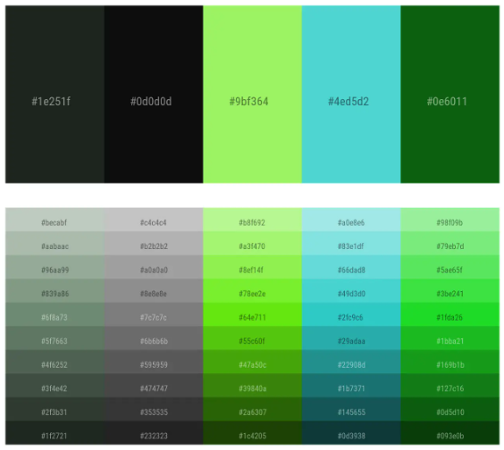
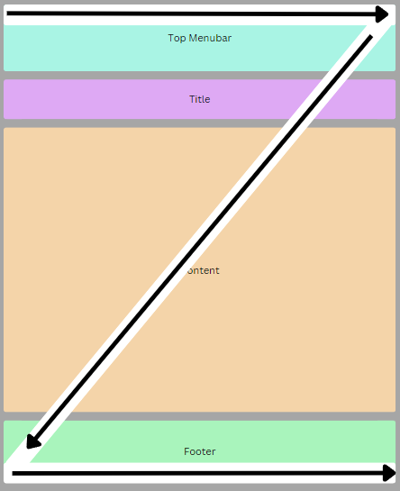

Short Reflection
Overall, I am very happy with the design, aesthetics, interactivity and production of this website. I intended for the website to be clean and simplistic, with the theme of being aesthetically pleasing and easy to view. Using a dark theme with a light seagreen accented around is enjoyable to look at and a ncie colour combination. The dark theme is easy on the eyes and is easier on the computer to view. In summary, producing this website has been an enjoyable experience for me and viewing my own final product is very rewarding.
Technical
Structure
The structure of the page follows a basic layout of a website. The first section is a header containing a menu bar at the top of the website with the 4 buttons to navigate to the other pages.
Using a list of words linked to each page, removing the text styling and adding hover animations for interactivity.
Below the menu bar is a
title for the page seperated from its content with a horizontal line to specify which page the user is on.
The next section of the page is
where the content is, containing text images, links, and hover animations for interactivity. The content is laid out specifically to ensure that the
page is not cluttered with text and is balanced with images and interactivity. This is to ensure the webpage is interesting and engaging to use.
Below the content is the last section of the page, the footer. The footer includes specific information about the webpage itself, such as the author
of the page, date the page was last updated, and the what the website was produced for.
Webpages
| Page Name | File Name | Page Description |
|---|---|---|
| Websystems - Home | index.html | This is the home page and an introduction to myself accompanied by a photo of myself. |
| Websystems - Past | past.html | This page describes some of the projects I have worked on in the past during my high school years and my university years. |
| Websystems - Future | future.html | This page discusses what where I intend to take my knowledge to after I finish my university degree. |
| Websystems - Comments | comments.html | This page goes in depth about the technical, aesthetic and accessibility aspects of the webpages including the reasoning behind the design and creation of the website. |
Main CSS and Tags Used
| Name | Type | Description |
|---|---|---|
| body | Element | Sets background colour, default font size and default font family. |
| p, h1, h2 | Element | tags used to display text for the paragraphs, headings and subheadings of the webpages. |
| #menubar | ID | Sets background colour, padding, border styling, font colour, font sizing and font family of content in the menubar. |
| #title | ID | Sets font colour, font sizing and font family of the title of each page. |
| .outermargins | Class | Sets the left and right outer margins of all the webpage's contents. |
| .content | Class | Sets font colour, max width, left and right margins of the actual information content of the webpage. |
| .menu | Class | Set the list inline, remove the dot points, remove underlining of the text, font colour, background colour, padding, and include hover animations of the navigation buttons in the top menubar. |
| .image | Class | Set the image width and height, opacity and hover animations for the images with text overlay. |
| .footer | Class | Set font colour, background colour, font size, padding and font family of the footer. |
Aesthetics
Page Colour Palette
The page colour palette used was a dark grey and black, with light seagreen accents. The dark styling of the website is to ensure the website is easy on the eyes of the user, instead of using the strong white colours that is commonly used in websites. Another reason I used dark styling is because everyone changes websites to dark mode when given the option, so I decided to just create the website in a "Dark Mode" by default. This also reduces the amount of energy used to display the page since the pixels of the display wont require to light up as much diplaying black or dark grey compared to white. Moreover, black, dark grey and light sea green go well together as colour combinations as shown in the specific colour palette.
Animations
Hover animations are used to engage the audience and keep the website interesting to navigate. This also adds to the visual aesthetic of the website since I was able to add more light seagreen accents to parts of the webpage. All animations used in the website are hover animations, mostly for the menubar buttons and the hover overlays for the text on the images. Using the transition attribute to add a fading animation to transition to the hover settings, when the mouse hovers over the select element, it will animate and change to the hover settings from css. This was mainly used in the past page where there were 4 images that when the cursor hovers over the image, a text overlay appears and captions the image, one image behaves differently as the text overlay tells the user to click on the image which navigates to an external link to watch a video.
Text visuals
The text on each webpage is spread and laid out to ensure that there is not an overwhelming amount of text for the user. The font colour used is white because it will contrast the most to the dark theme of the website. The white colouring makes the text easier to read on the dark grey background, rather than having a white background with black text, the white text is easier to read as explained in the "Page Colour Palette" section, the overall darker page theme is easier on user's eyes to look. The font family chosen is "Sans Serif" this is because it is the simplest and easiest font to read as it has no unneccessary decorations and each letter is easily distinguishable. Using CSS to set the text settings to each of the HTML text tags (<p>, <h1>, <h2>). These design choices make reading text from the webpage easy and effortless for the most proficient user experience.
Structure
The overall theme of the structure of the webpages was a simple, minimalistic and clean aesthetic. Better website are consice, simple and easy to look at. My website has an adequate amount text to images to not convolute the pages with too much text. Having images is effective as it gives a quick and easy visual representation of information, having a quick and effortless way to convey my information will greatly benefit the user experience of my website. Furthermore, I included a more blocky and structured aesthetic to my webpages, this provides consistency to my webpages and improves the visual appeal.
Accessibility
Content Sizing
The headings and subheadings are made clear as they are large in size compared to the paragraph text, this is both for the cleanliness and organisation of the website into consice sections that are obvious to the user. Main paragraphs of text are at an average size for a website and if the text is too small, the webpage can be zoomed into without obscuring any content from being shown. Images are made to fit the same margins as the content, making them large and easy to see. Centred images also make the webpage aesthetically pleasing as people generally look at websites quickly in a Z motion with their eyes, having the images in the centre allows for a effortless quick scan of the webpage for the user. The top menu bar and footer also stretch along the bottom of the webpage as these will be the most noticeable to the viewer from using the Z rule.
Text Visibility
If the text written on the webpage is too small for the viewer, using the zoom tool in the web browser is proficient in increasing the size of the text to improve readability. The text's margins decrease in size to ensure all the text is still displayed on screen comparitively to if the webpage decreased in size and the text would be lost off screen. This was done by setting the left and right margins to "auto" of the class "content" in CSS, this allows the margins to dynamically change depending on the webpage size. Setting a max width to the text prevents the text from stretching too far out when the webpage is displayed on a larger sized screen without restricting the width to a specific size. Moreover, images that cannot be viewed use the "alt" to add a description of the photo if the photo is disabled or cannot load and if the cursor hovers over the image, a text overlay description of the image is shown.
Contrast Visibility
Using a dark theme and dark grey background allowed for the content of the pages to have high contrast, namely the white text and the images. However, the image of the Canva logo needed to have a black background as it was blending too much with the dark grey background. Changing the background of the Canva logo to black brought more contrast a resulted in the image being easier to see and distinguish. The images on the past page have many colours and already contrast with the previous choice of a dark grey background, this saves time in the process of making the website whilst also improving the visibility of the images and giving a more aesthetically pleasing look. Using the Toptal colour blind web page filter to check the visibility of the content whilst using the different colour blind filters this test was a success as all the content on the pages was easily viewable and the contrast between the colours allowed the text to be easily read.
Screen Size Changes
When viewing the page on a smaller screen such as a mobile phone or zooming in to the webpage, the layout of the page changes. Mainly on the first page, its demonstrated how the image is beside the text, however when zooming into this page, the image and text get closer. Instead of allowing the image to overlap with the text deeming the text to be unreadable, I used the @media rule to change how the layout of the page looks to fit the certain screen size. When zooming into the page, the text will be place underneath the image, this is for anyone viewing on a smaller screen size, or if the text is too small to read the user can zoom into the page without obscuring the text. Moreover, the other pages can be zoomed into without obscuring any content.